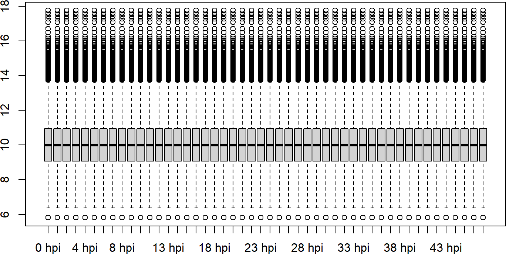
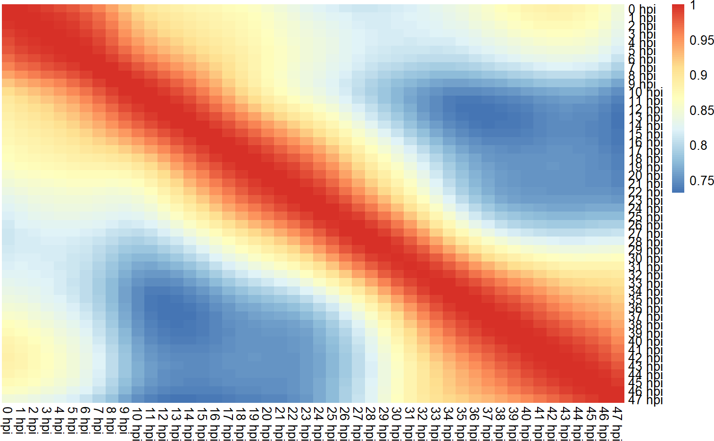
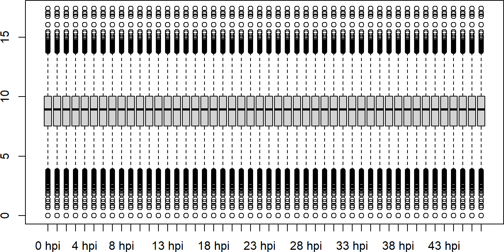
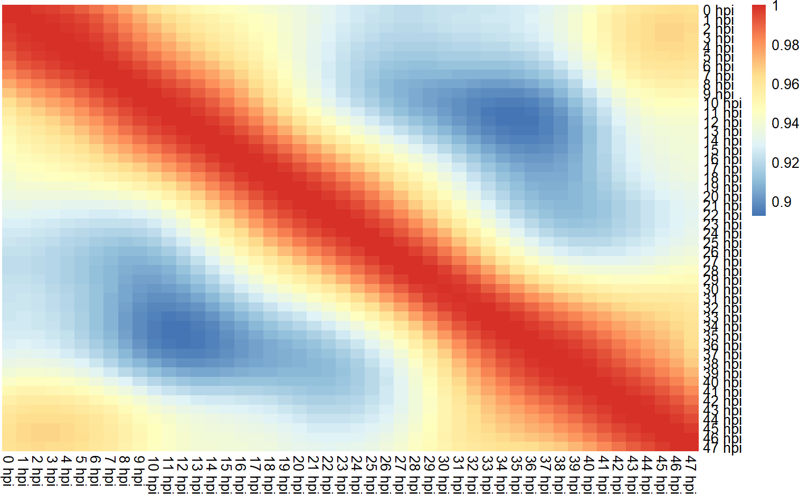

Microarray data reanalysis
Rohit Satyam, Alberto Maillo, David Gomez-Cabrero, Arnab Pain
King Abdullah University of Science & Technology, Saudi Arabia21 October, 2026
Source:vignettes/Microarray_reanalysis.Rmd
Microarray_reanalysis.RmdAbstract
This section covers examplary code on how one can reanalyze microarray data of Apicomplexans (here Plasmodium as an example).
Introduction
This vignette covers the example on how users can reanalyze the
Microarray data sets by updating the annotations from VEuPathDB
partially using toGeneid() and other R packages. It is
important to do reanalysis before deciding to reuse such dataset as
annotations evolve since it will affect the outcome of the analysis.
With release 71 of VEuPathDB, only users with subscription and API
key can access the database programmatically. Use
usethis::edit_r_environ(scope = "user") to add VEuPathDB
API using VEUPATHDB_API_KEY variable. By default, all the
functions look for VEUPATHDB_API_KEY variable for API key.
Should you store your key using any other variable, supply it using
api_key argument in VEuPathDB associated functions.
Importing the dataset
## Loading necessary libraries
library(GEOquery) # Querying the dataset from GEO
library(plasmoRUtils) # For gene ID conversion
library(Biostrings) # For sequence alignment
library(GenomicRanges) # For handling genomic coordinates
library(dplyr) # For data wrangling
library(Biobase) # access ExpressionSet assays and feature metadata
library(limma) # probe summarisation and normalizationFor demonstration purpose, we will use GSE66669 from
(Painter et al.
2018). This is a time-series dataset that is often used by
Plasmodium community to annotate single cell atlas and
deconvolution tasks.
The getGEO function retrieves the microarray dataset as
an ExpressionSet object from GEO database. We will make a new
column by combining the Old Ids and the probe sequence since we know
that there can be multiple sequence for one probe ID and same probe ID
for multiple genes.
gse <- getGEO("GSE66669")
gse <- gse[[1L]]
class(gse)
#> [1] "ExpressionSet"
#> attr(,"package")
#> [1] "Biobase"
dim(gse) ## 14499 rows and 144 samples
#> Features Samples
#> 14499 144
featureNames(gse) %>% head() ## The features are ID number.
#> [1] "4" "5" "6" "7" "8" "9"
## probe information is stored in
probedf <- fData(gse)
head(probedf)
#> ID COL ROW NAME CONTROL_TYPE ACCESSION_STRING ORF
#> 4 4 96 158 PFL0815W_v7.1_P1/3 FALSE PFL0815w PFL0815w
#> 5 5 96 156 PFB0495W_v7.1_P3/4 FALSE PFB0495w PFB0495w
#> 6 6 96 154 PF13_0050_v7.1_P1/4 FALSE PF13_0050 PF13_0050
#> 7 7 96 152 PF14_0416_v7.1_P1/2 FALSE PF14_0416 PF14_0416
#> 8 8 96 150 PF11_0120_v7.1_P1/1 FALSE PF11_0120 PF11_0120
#> 9 9 96 148 PFI1280C_v7.1_P5/9 FALSE PFI1280c PFI1280c
#> CHROMOSOMAL_LOCATION DESCRIPTION
#> 4 unmapped DNA-binding chaperone, putative
#> 5 unmapped conserved Plasmodium protein, unknown function
#> 6 unmapped HORMA domain protein, putative
#> 7 unmapped zinc finger protein, putative
#> 8 unmapped conserved Plasmodium protein, unknown function
#> 9 unmapped protein kinase, putative
#> SEQUENCE
#> 4 TGAGTGGATGTAATTTAATATGGTTAGATAAAGCAACCAAAAAGAGGAGCAAGGATATAT
#> 5 GAAAGTTTACAGAGTGAGTTTGAAAAAGTAACAAAAACTAGTAAAAAGGGAGGTATACAT
#> 6 AAACAAATGAATATCCACCTGAAAACAACCTTCTATTAAACAGTAACGATATATACCCTC
#> 7 AAAAAAGATAGTTTAGCAAAAAACAAATATACTGGGTTATATGGACCTGTACGTAGTAGT
#> 8 CGAATTATCATGGCCTTGAAAAATCATTAAGAAGACGAGGAGGTAAGATAAAAACTATTT
#> 9 CTTGTTGATTGTAACAACAGATCATTGATGAATAAAAATGTAATGGATTTTGCACATATG
#> SPOT_ID
#> 4 PFL0815W_v7.1_P1/3
#> 5 PFB0495W_v7.1_P3/4
#> 6 PF13_0050_v7.1_P1/4
#> 7 PF14_0416_v7.1_P1/2
#> 8 PF11_0120_v7.1_P1/1
#> 9 PFI1280C_v7.1_P5/9
## There are 29 rows for which ORF entry is missing
table(probedf$ACCESSION_STRING==probedf$ORF)
#>
#> FALSE TRUE
#> 29 14470
probedf$ACCESSION_STRING[probedf$ACCESSION_STRING!=probedf$ORF]
#> [1] "RNAzID:1537" "RNAzID:3967" "ScGlucanSynthase" "U5RNA"
#> [5] "ScGlucanSynthase" "RNAzID:2132" "RNAzID:1876" "ScGlucanSynthase"
#> [9] "ScGlucanSynthase" "RNAzID:1678" "ScCD" "ScUPRT"
#> [13] "S1-type_28S:rRNA" "ScGlucanSynthase" "ScGlucanSynthase" "ScGlucanSynthase"
#> [17] "ScGlucanSynthase" "ScGlucanSynthase" "tetR" "RNAzID:1743"
#> [21] "ScGlucanSynthase" "ScGlucanSynthase" "ScGlucanSynthase" "ScGlucanSynthase"
#> [25] "ScGlucanSynthase" "RNAzID:3370" "ScGlucanSynthase" "Rluciferase"
#> [29] "ScGlucanSynthase"
probedf$ORF[probedf$ACCESSION_STRING!=probedf$ORF]
#> [1] "" "" "" "" "" "" "" "" "" "" "" "" "" "" "" "" "" "" "" "" "" "" "" "" ""
#> [26] "" "" "" ""
## Let's make unique identifiers by combining the Accession_string and sequence for those probes for which toGeneid function will fail
probedf$unique <- paste0(probedf$SEQUENCE, ":", probedf$ACCESSION_STRING)The row names matches the ID column. We can see that the old “PFL”
ids are present in the ACCESSION_STRING or ORF
columns while the probe sequences are present in SEQUENCE
column. Some 29 rows contains some Plasmodium ncRNAs (RNAzID),
followed by several control probes (see table below).
| Probe ID | What it Is | Purpose |
|---|---|---|
| RNAzID:1537, 1678, 1743, 1876, 2132, 3370, 3967 | Predicted non-coding RNAs in the Plasmodium genome (identified by the RNAz algorithm) | To assay expression (or absence thereof) of structured ncRNAs—often used to explore regulatory RNAs or as negative controls when comparing to mRNA signals. |
| U5RNA | U5 small nuclear RNA | A core spliceosomal snRNA—serves as a housekeeping control for RNA integrity and normalization. |
| S1-type_28S:rRNA | A segment of 28S ribosomal RNA | Ribosomal RNA control for overall RNA loading and quality. |
| ScGlucanSynthase | Saccharomyces cerevisiae glucan synthase transcript | Spike-in control from yeastto: monitor labeling efficiency and hybridization consistency. |
| ScCD | S. cerevisiae cytosine deaminase | Another yeast spike-in for normalization across arrays. |
| ScUPRT | S. cerevisiae uracil phosphoribosyltransferase | Yeast spike-in control for detection sensitivity. |
| tetR | Bacterial tetracycline repressor | Exogenous control to check for cross-hybridization and labeling. |
| Rluciferase | Renilla luciferase | Reporter gene spike-in: assesses labeling and detection linearity. |
# retain only legacy IDs that map unambiguously to one current gene.
new <- toGeneid(inputid = unique(probedf$ACCESSION_STRING), from = "old", to = "ensembl") %>%
dplyr::select(`Input ID`, `Gene ID`) %>% dplyr::distinct()
resolved <- new %>% dplyr::group_by(`Input ID`) %>%
dplyr::filter(dplyr::n_distinct(`Gene ID`) == 1L) %>% dplyr::ungroup()
ix <- match(probedf$ACCESSION_STRING, resolved$`Input ID`)
probedf$`Gene ID` <- resolved$`Gene ID`[ix]
unmappedprobes_df <- probedf[is.na(probedf$`Gene ID`) &
!is.na(probedf$SEQUENCE) & nzchar(probedf$SEQUENCE),
c("ACCESSION_STRING", "SEQUENCE", "unique"), drop = FALSE]Some probes may fail to map uniquely through toGeneid();
the number depends on the current VEuPathDB annotation. We therefore
attempt to map unresolved probe sequences to annotated mRNA sequences.
For 60-bp probes, we use Biostrings::vmatchPattern() with
max.mismatch = 0. Relaxing this threshold requires
additional specificity checks: an inexact hit must not be assumed to
identify a unique gene.
## retriving mRNA from plasmoDB
readVEuPathFasta <- function(url,
api_key = Sys.getenv("VEUPATHDB_API_KEY"),
timeout = 60) {
if (!nzchar(api_key)) stop("VEuPathDB API key is missing.")
tmp <- tempfile(fileext = ".fasta")
on.exit(unlink(tmp), add = TRUE)
httr2::request(url) |>
httr2::req_auth_bearer_token(api_key) |>
httr2::req_timeout(timeout) |>
httr2::req_perform(path = tmp)
Biostrings::readDNAStringSet(tmp)
}
mrna_fasta <- readVEuPathFasta(
paste0(
"https://plasmodb.org/a/service/raw-files/release-71/",
"Pfalciparum3D7/fasta/data/",
"PlasmoDB-71_Pfalciparum3D7_AnnotatedTranscripts.fasta"
)
)
# extract transcript identifiers and require a UNIQUE gene-level match.
names(mrna_fasta) <- sub("[[:space:]].*$", "", names(mrna_fasta))
probe_matches_zero <- lapply(unmappedprobes_df$SEQUENCE, function(seq) {
Biostrings::vmatchPattern(seq, mrna_fasta, max.mismatch = 0)
})
# A probe matching several transcripts is acceptable only when all
# matching transcripts resolve to one gene. Otherwise leave it ambiguous.
exact_gene_hits <- lapply(probe_matches_zero, function(matches) {
transcript_ids <- names(mrna_fasta)[lengths(matches) > 0L]
gene_ids <- sub("\\.[0-9]+$", "", transcript_ids)
gene_ids <- sub("-T[0-9]+$", "", gene_ids)
unique(gene_ids)
})
unique_hit <- vapply(exact_gene_hits, function(ids) {
if (length(ids) == 1L) ids else NA_character_
}, character(1))
# map by original probe row; do not expand ExpressionSet features.
missing_ix <- which(is.na(probedf$`Gene ID`) & !is.na(probedf$SEQUENCE) &
nzchar(probedf$SEQUENCE))
probedf$`Gene ID`[missing_ix] <- unique_hit
#explicitly reporting unresolved/multi-mapping probes for manual review.
ambiguous <- vapply(exact_gene_hits, length, integer(1)) > 1L
message(sum(ambiguous), " probes match multiple distinct genes and were not assigned.")
unresolved <- is.na(probedf$`Gene ID`)
## Adding a prefix to remove unmapped reads later when required
probedf$`Gene ID`[unresolved] <- paste0("UNMAPPED:",
probedf$ACCESSION_STRING[unresolved], ":", rownames(probedf)[unresolved])
stopifnot(nrow(probedf) == nrow(Biobase::fData(gse)))
stopifnot(identical(rownames(probedf), Biobase::featureNames(gse)))Exact matching does not guarantee unique mapping: paralogs, repeated transcripts and noncoding RNAs may share an identical probe sequence. Here the probes mapping to multiple genes are kept labelled as unresolved probe-level features rather than choosing a gene arbitrarily.
Updating the feature data in the Expression set
We will now use limma’s avereps() function to average
probe measurements per assigned gene ID. This is a descriptive
summarisation, not a replacement for probe-level reannotation or a full
differential-expression reanalysis.
fData(gse) <- probedf[featureNames(gse), , drop = FALSE]
## retriving the intensity matrix
expr_matrix <- Biobase::exprs(gse)
probes2genes <- Biobase::fData(gse)$`Gene ID`
stopifnot(length(probes2genes) == nrow(expr_matrix))
gene.mat <- limma::avereps(expr_matrix, ID = probes2genes)
gene.mat %>% head() %>% .[,1:5]
#> GSM1627532 GSM1627533 GSM1627534 GSM1627535 GSM1627536
#> PF3D7_1216900 4929.1199 4901.7775 4846.6257 4753.3563 4619.9623
#> PF3D7_0211100 321.2292 324.0473 326.6416 329.4834 335.1214
#> PF3D7_1309400 740.9756 752.7146 766.7923 783.4820 801.7903
#> PF3D7_1443800 1029.0478 1049.5709 1069.6907 1090.2481 1107.5859
#> PF3D7_1111400 1418.8720 1390.1635 1367.5520 1351.4528 1335.2197
#> PF3D7_0926100 2274.6915 2224.1830 2177.2646 2130.5968 2085.8498Checking correlation between samples of time series data
Before normalizing, inspect
summary(as.vector(Biobase::exprs(gse))) and the GEO
platform processing notes to confirm whether the supplied intensities
are already log-transformed. The following examples avoid a second log
transformation.
This GSE series contains three sample types:
Total RNA reflects the combined cellular transcript pool at each time point.
Labeled (transcribed) captures only nascent RNA from the 10 min 4-TU pulse (a snapshot of newly labelled transcripts).
Unlabeled (stabilized) RNA reflects transcripts not captured by the labeling pulse; this is not a direct RNA half-life measurement.
For more details read Nascent in vivo mRNA labeling and capture throughout the IDC section of the paper.
temp <- gse[,gse$characteristics_ch1.2=="sample type: Total RNA"]
sample_expr <- Biobase::exprs(temp)
gene.mat <- limma::avereps(sample_expr, ID = probes2genes)
gene.mat <- gene.mat[!is.na(rownames(gene.mat)) & nzchar(rownames(gene.mat)), , drop = FALSE]
## Remove control genes
gene.mat <- gene.mat[grepl("^PF3D7_", rownames(gene.mat)), , drop = FALSE]
colnames(gene.mat) <- temp$`time (hours post invasion):ch1`
gene.mat <- log2(limma::normalizeQuantiles(gene.mat)+1) ## Do not blindly lognormalise. Here from GEO database we know: Total, Labeled, and Unlabeled values calculated based on the intensity of Total Cy5 channel normalized to Cy3 reference and the estimated contributions of Labeled Cy5 and Unlabeled Cy3 to calculated Total Cy5.
boxplot(gene.mat)
coormat <- stats::cor(gene.mat, use = "pairwise.complete.obs")
pheatmap::pheatmap(coormat, cluster_rows = FALSE, cluster_cols = FALSE, border_color = NA)
For labeled data
temp <- gse[,gse$characteristics_ch1.2=="sample type: 4-TU Labeled RNA"]
sample_expr <- Biobase::exprs(temp)
gene.mat <- limma::avereps(sample_expr, ID = probes2genes)
gene.mat <- gene.mat[!is.na(rownames(gene.mat)) & nzchar(rownames(gene.mat)), , drop = FALSE]
gene.mat <- gene.mat[grepl("^PF3D7_", rownames(gene.mat)), , drop = FALSE]
colnames(gene.mat) <- temp$`time (hours post invasion):ch1`
gene.mat <- log2(limma::normalizeQuantiles(gene.mat)+1)
boxplot(gene.mat)
coormat <- stats::cor(gene.mat, use = "pairwise.complete.obs")
pheatmap::pheatmap(coormat, cluster_rows = FALSE, cluster_cols = FALSE, border_color = NA)
Session Info
utils::sessionInfo()
#> R version 4.4.1 (2024-06-14 ucrt)
#> Platform: x86_64-w64-mingw32/x64
#> Running under: Windows 11 x64 (build 26200)
#>
#> Matrix products: default
#>
#>
#> locale:
#> [1] LC_COLLATE=English_India.utf8 LC_CTYPE=English_India.utf8
#> [3] LC_MONETARY=English_India.utf8 LC_NUMERIC=C
#> [5] LC_TIME=English_India.utf8
#>
#> time zone: Asia/Riyadh
#> tzcode source: internal
#>
#> attached base packages:
#> [1] stats4 stats graphics grDevices utils datasets methods
#> [8] base
#>
#> other attached packages:
#> [1] limma_3.60.6 dplyr_1.2.1 GenomicRanges_1.56.2
#> [4] Biostrings_2.72.1 GenomeInfoDb_1.40.1 XVector_0.44.0
#> [7] IRanges_2.38.1 S4Vectors_0.42.1 plasmoRUtils_1.1.3
#> [10] rlang_1.3.0 readr_2.2.0 janitor_2.2.1
#> [13] GEOquery_2.72.0 Biobase_2.64.0 BiocGenerics_0.50.0
#> [16] BiocStyle_2.32.1
#>
#> loaded via a namespace (and not attached):
#> [1] httr2_1.3.0 magrittr_2.0.5 snakecase_0.11.1
#> [4] otel_0.2.0 compiler_4.4.1 systemfonts_1.3.2
#> [7] vctrs_0.7.3 reshape2_1.4.5 rvest_1.0.5
#> [10] stringr_1.6.0 pkgconfig_2.0.3 crayon_1.5.3
#> [13] fastmap_1.2.0 promises_1.5.0 rmarkdown_2.32
#> [16] tzdb_0.5.0 UCSC.utils_1.0.0 ragg_1.5.2
#> [19] bit_4.6.0 purrr_1.2.2 xfun_0.62
#> [22] zlibbioc_1.50.0 cachem_1.1.0 easyPubMed_3.1.6
#> [25] jsonlite_2.0.0 later_1.4.8 parallel_4.4.1
#> [28] R6_2.6.1 bslib_0.12.0 stringi_1.8.9
#> [31] RColorBrewer_1.1-3 lubridate_1.9.5 jquerylib_0.1.4
#> [34] Rcpp_1.1.2 bookdown_0.48 knitr_1.52
#> [37] R.utils_2.13.0 timechange_0.4.0 tidyselect_1.2.1
#> [40] rstudioapi_0.19.0 dichromat_2.0-1 yaml_2.3.12
#> [43] codetools_0.2-20 websocket_1.4.4 curl_8.1.0
#> [46] processx_3.9.0 tibble_3.3.1 plyr_1.8.9
#> [49] bio3d_2.4-5 withr_3.0.3 S7_0.2.2
#> [52] evaluate_1.0.5 desc_1.4.3 xml2_1.6.0
#> [55] pillar_1.11.1 BiocManager_1.30.27 plotly_4.12.1
#> [58] generics_0.1.4 vroom_1.7.1 chromote_0.5.1
#> [61] hms_1.1.4 ggplot2_4.0.3 scales_1.4.0
#> [64] glue_1.8.1 pheatmap_1.0.13 tools_4.4.1
#> [67] data.table_1.18.6.1 fs_2.1.0 grid_4.4.1
#> [70] tidyr_1.3.2 GenomeInfoDbData_1.2.12 cli_3.6.6
#> [73] textshaping_1.0.5 viridisLite_0.4.3 gt_1.4.0
#> [76] gtable_0.3.6 R.methodsS3_1.8.2 sass_0.4.10
#> [79] digest_0.6.39 mgsub_2.0.0 htmlwidgets_1.6.4
#> [82] farver_2.1.2 htmltools_0.5.9 pkgdown_2.2.1
#> [85] R.oo_1.27.1 lifecycle_1.0.5 httr_1.4.9
#> [88] statmod_1.5.2 bit64_4.8.6